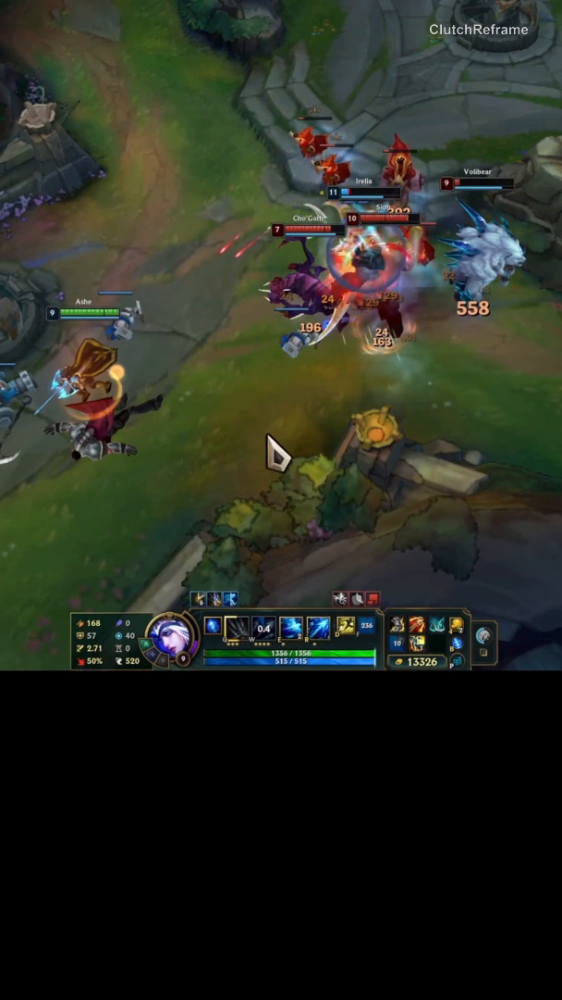
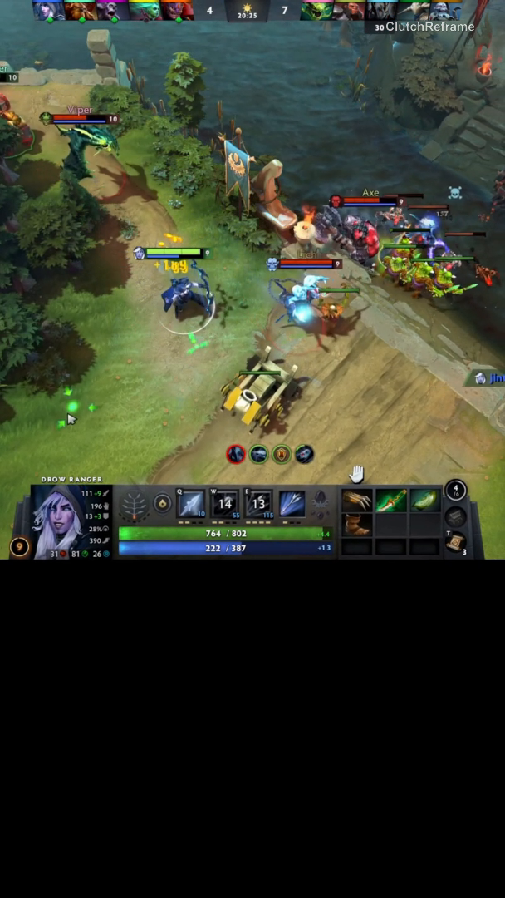
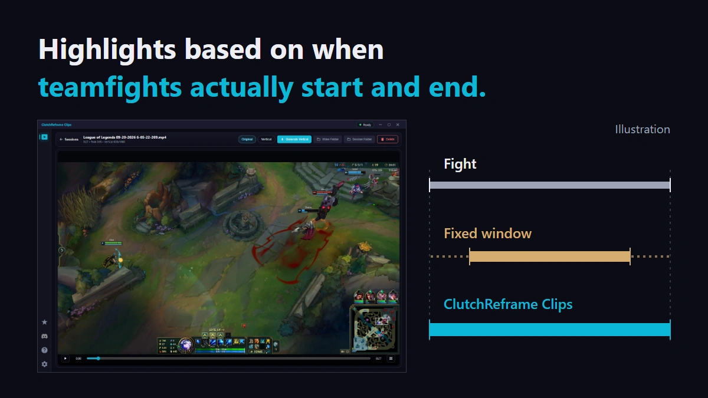
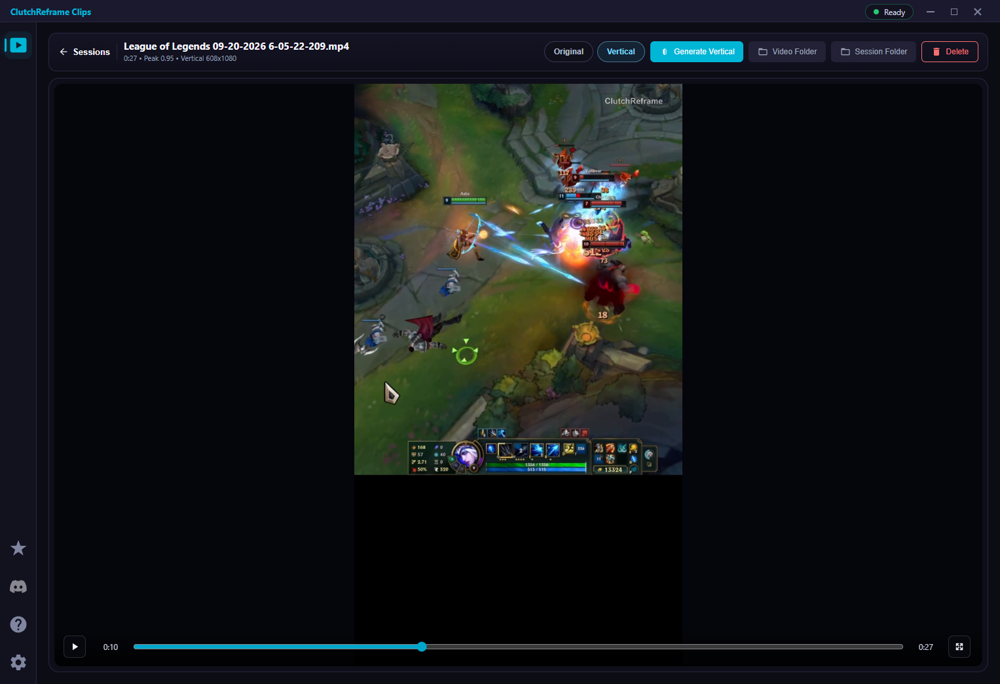

Vertical clips
that follow
the fight.
Automatically capture League of Legends and Dota 2 highlights. Pick a clip, click Generate Vertical, and create a 9:16 video that follows the action.


Examples show an advanced camera mode available with Trial or Pro. Free includes horizontal auto-reframing.
The result, in motion
See it in action.
Take a look at the app, then watch highlights from both games.
Automatic reframing
Keep the action
in frame.
A fixed crop can leave your best play outside the frame. Automatic reframing adjusts the view as the action moves, helping keep key gameplay on screen without frame-by-frame crop adjustments.
Teamfight start/end detection
Capture when
the fight happens.
ClutchReframe Clips detects when teamfights start and end to guide highlight timing, rather than relying only on a fixed recording window.

Play. Pick. Create.
From highlight to vertical clip.
Play & capture
Play a supported mode with automatic capture enabled. Find your highlights in the Library after the game.
Generate Vertical
Choose a captured highlight and click Generate Vertical.
Preview & share
Preview the result in the app, then upload the exported video to TikTok, YouTube Shorts, or Reels.

Which games are supported?
League of Legends and Dota 2 on Windows PC through Overwolf. Recording is available in supported game modes. Check each game's settings in the app for the supported and unsupported mode lists.
What should I check before playing?
Your game image must fill the monitor, and the in-game resolution must match your Windows desktop resolution. Windowed, scaled, letterboxed, and non-full-monitor borderless layouts are not supported. Dota 2 also requires Game State Integration; follow the setup guide in the app or the Overwolf GSI guide.
What is included in Free?
Free includes automatic highlight capture and horizontal auto-reframing. Generate one vertical video at a time with the ClutchReframe watermark. Basic clip combining is included. Sponsored ads may appear in the app.
What does Pro add?
Pro adds more camera modes, including vertical movement and automatic zoom, batch generation, advanced transitions, an ad-free app experience, and the option to remove the watermark. See the current offer and billing terms in the app before purchasing.
How does the Trial work?
Eligible users can claim one 15-day Trial per verified Overwolf account. It starts when claimed, requires no payment details, and does not renew or charge you when it ends. Trial unlocks the Pro toolkit, but exported videos keep the ClutchReframe watermark.
How do I share my clips?
Generate and preview your vertical video, then upload the exported file to your preferred platform. Clips does not publish to social accounts for you.
Are my recordings uploaded?
Automatic capture and editing keep recordings and related game-event and editing data on your PC. Account, subscription, Trial, and advertising services have separate data practices. Support files are shared only if you choose to send them. See the Privacy Policy for details.
Where can I get help?
Email clutchreframe@gmail.com or join our Discord community. If needed, use Export Diagnostics in the app and choose whether to send the exported file with your support request.
Contact us.
Copy our email address and send us a message using your preferred email service, including webmail.
Opening an email app requires a default email app to be set up.